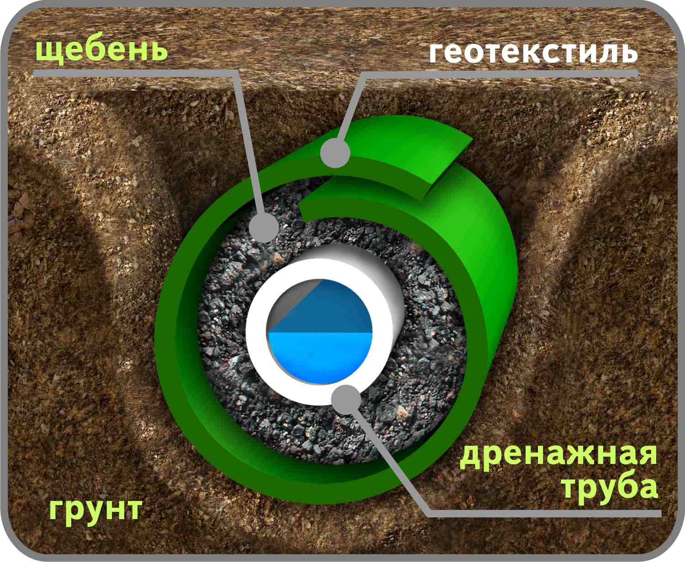
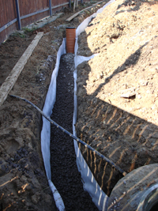

|
На этапе планирования сада и благоустройства участка часто возникает вопрос о необходимости устройства дренажной системы и отвода лишней воды. Сначала определяют уровень грунтовых вод и рельеф.
Если почва на участке глинистая, а уровень грунтовых вод высокий, то без дренажной системы не обойтись.

Дренаж – это система отведения воды из участка. Основной целью дренажа является регуляция водно-воздушного режиму почвы. Корневой системе растений и грунтовым микроорганизмам для нормального развития необходима не только вода, но и доступ кислорода.
Поэтому многие растения не переносят застойного увлажнения, так как в переувлажненной почве их корни испытывают хронический недостаток кислорода. Особенно важно это учитывать при устройстве газона. На переувлажненных почвах газонные травы "задыхаются", ухудшаются их рост, кущение, снижается иммунитет. Кроме того, сырые почвы всегда холоднее, из них происходит активное вымывание питательных веществ.
В том случае, если в некоторых местах скапливается и застаивается дождевая или талая вода, понадобится дренаж, но дренаж - это дорогостоящая система. Поэтому, прежде чем прокладывать ее, стоит выяснить, действительно ли ваш участок страдает от перенасыщения влагой.
Устройство дренажной системы – процесс трудоемкий и сложный, поэтому проектированием и устройством должны заниматься профессионалы, которые могут учесть особенности осушаемого участка и гарантировать нормальную работу дренажа. Для этого создается проект-схема системы дренажа. В соответствии с этим документом определяется место устройства дрен, глубина их залегания, устройство каналов, уклоны, подбор материалов и комплектующих изделий. На небольших участках проект дренажа может быть выполнен без расчета.
Функции дренажа:
-
быстрый отвод талых вод, что позволяет использовать участок уже ранней весной;
-
защита подвальных помещений и фундамента от избытка влаги;
-
снижение фильтрационного давления на конструкции;
-
понижение уровня грунтовых вод;
-
поддержание дорожек и мощения участка в сухом состоянии;
-
предотвращение загниванию корневой системы высаженных растений;
-
отвод избыточных вод от продолжительных осадков.
В зависимости от уровня грунтовых вод, приводящих к переувлажнению территории, дренажбываетповерхностный или глубинный
Глубинный (закрытый) дренаж – представляет собой разветвленную систему подземных траншей. Для устройства траншей в настоящее время используются пластиковые трубы различного диаметра, геотекстильная ткань, песок и щебень.

Расстояния между траншеями, глубина их закладки, угол наклона зависит от механического состава почвы и уровня залегания грунтовых вод. Эти параметры определяет ландшафтный инженер. Вода по каналам может выводиться как за пределы участка, так и в определенное место на участке, где устраивается либо колодец, либо резервуар.
Поверхностный (открытый) дренаж – это система коммуникаций, расположенная на границах участка.

Она относительно проста при проектировании и реализации, однако справляется только с некоторыми задачами. Открытие дренажные системы прокладываются следующим образом: по периметру выкапываются специальные канавы, их ширина составляет около полуметра, а глубина – 60-70 сантиметров. Вода, стекающая по этим канавкам, собирается в одной, наиболее крупной, и отводится от участка. Такие канавки решают проблему стока дождевых и талых воды.
Обе системы могут применяться на участке одновременно в различных вариантах и сочетаниях. При творческом подходе некоторые детали дренажа могут стать декоративными элементами сада и ландшафтный дизайн в целом будет практичным и совершенным.
|